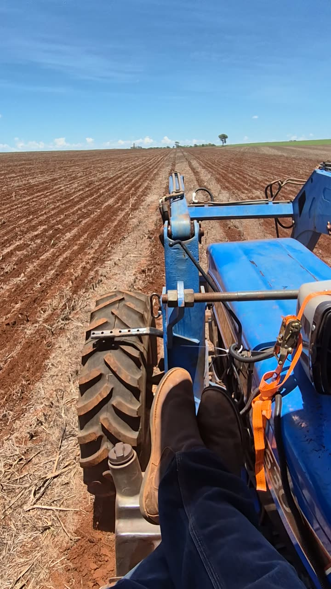
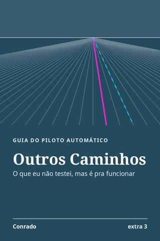
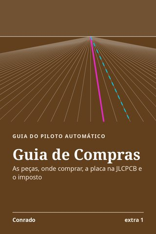
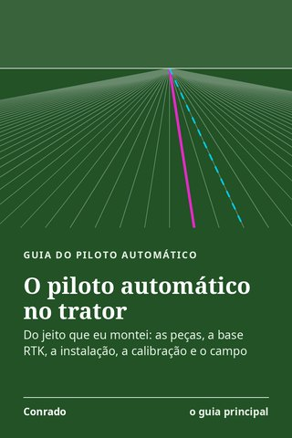
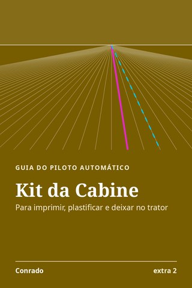
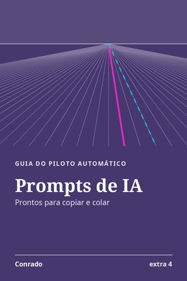
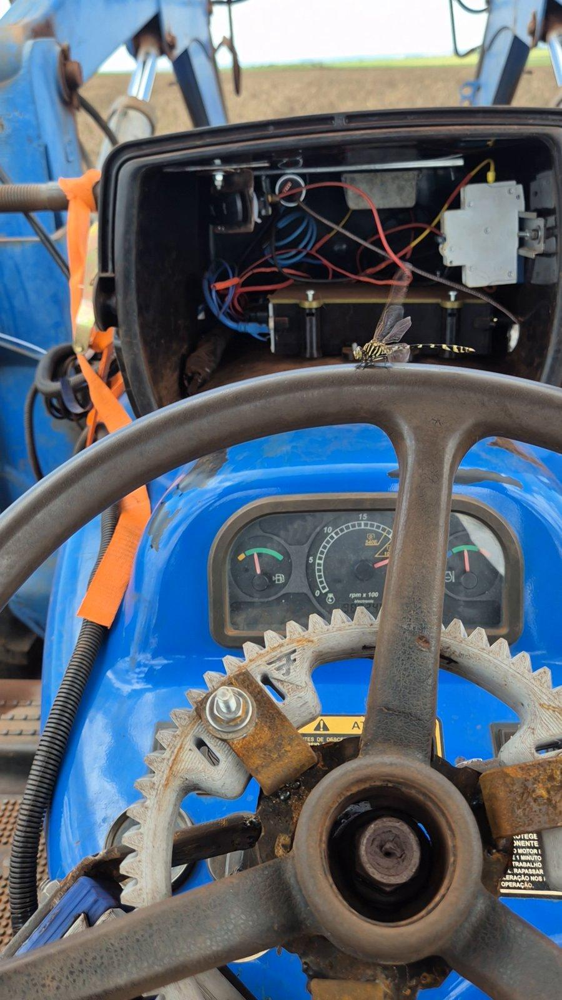
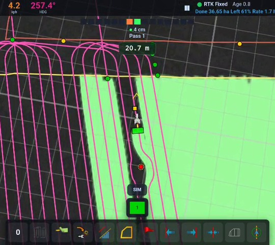
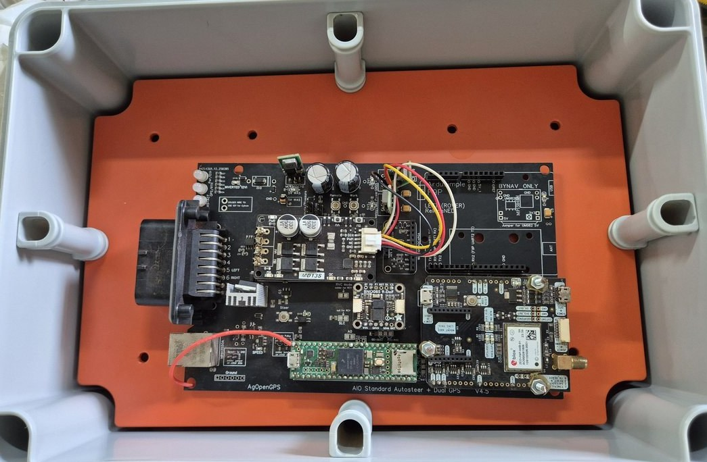

Monte o piloto automático no trator que você já tem
O caminho inteiro, do jeito que eu faria hoje: as peças, a base RTK, a montagem, os programas e a calibração. Com fotos, prints e os 27 erros que eu cometi.
A conta
Pagar 40, 50 mil num piloto de marca era fora da minha realidade
Eu montei o meu com o AgOpenGPS, que é um projeto aberto e gratuito, e plantei com ele nesta safra. Olha o tamanho da diferença, com preços de novembro de 2026:
O de marca vem pronto, instalado, com garantia e suporte. O que você monta não vem com nada disso: a diferença paga o seu tempo e o seu risco.
Para quem vai montar, os R$ 297 são pouco perto disso. A conta inteira das peças está nas perguntas, lá embaixo.
Por que vale
É para tirar as pedras do caminho e dar a coisa bem mastigada
Economiza dinheiro
Na primeira vez eu quis fazer do jeito mais barato, e comprei peça que não serviu. O guia ajuda a cortar esses gastos pequenos que a gente faz querendo economizar e que, no fim das contas, não adiantam.
Economiza nos erros
Eu perdi dois sensores da roda, achei na placa um regulador entregando 10,2 V no lugar de 5 V, e por um batente que faltava perdi horas de qualidade de plantio. Você lê antes de passar por isso.
Economiza tempo de pesquisa
Que peça, que fornecedor, como monta, como calibra, o que fazer quando dá errado: eu gastei horas e horas atrás disso. No guia está na ordem, para você não quebrar a cabeça procurando.
Tem muita coisa nova
Tem conta que eu não vi explicada em lugar nenhum, como quanto o motor precisa girar para virar o volante, e a do imposto de quem importa peça. Serve até para quem já manja.





5materiaisO que você recebe
Um produto só. Você paga uma vez e recebe tudo isto.
- Guia do Piloto, o principalAs 8 partes na ordem em que você vai precisar, umas 340 páginas com fotos e prints.Na hora
- Guia de ComprasOnde comprar, quanto custa, a placa na JLCPCB, a conta do imposto e a lista com os links.Na hora
- Kit da CabineCartão da cabine, checklist do dia, “Aconteceu isso? Olhe aqui”, fichas, chicote e pinagem.8º dia
- Outros CaminhosO que eu não testei, mas é pra funcionar: UM982, rádio LoRa, motor direto no volante.8º dia
- Prompts de IACinco prompts para pedir ajuda à IA com o print da tela.8º dia
As 8 partes do Guia do Piloto
- Parte 0, antes de começar: para quem é, quanto custa, quanto tempo leva, a precisão que eu medi e a segurança.
- Parte 1, as peças: o que é cada uma e por que eu uso.
- Parte 2, a base RTK: quando você nem precisa de base, como montar a sua e como levar o sinal ao trator.
- Parte 3, o piloto no trator: a placa, o chicote, o motor no volante, o sensor da roda, a antena e a tela.
- Parte 4, os programas: o AgOpenWeb no tablet, o firmware, o GPS, a correção e como eu usei IA para configurar.
- Parte 5, a calibração: o assistente, a primeira reta, o ajuste fino, as cinco provas e a ficha.
- Parte 6, usar no campo: ligar na ordem, o talhão, as linhas, a manobra, o fim do dia e o treino de quem opera.
- Parte 7, quando dá errado: as mensagens da tela, o que fazer, e os 27 erros que eu cometi, com o que eu fiz.
- Seis apêndices: glossário, checklist do dia, cartão da cabine, licenças e créditos, onde aprender mais, solda e multímetro do zero.
Dúvidas ao vivo aos 30, 60 e 90 dias
Ao vivo e gravadas, só para quem comprou. Os dias contam do lançamento do guia; quem comprar depois recebe a gravação.
Grupo dos compradores
Um grupo de WhatsApp só de quem comprou o guia. Quem acompanha sou eu.
De atualização
Toda atualização do guia e dos extras é sua, sem pagar de novo. No 8º dia, o PDF dos cinco materiais para baixar.
O que não vem: suporte individual, a montagem no seu trator, a garantia de que vai funcionar no seu e as peças. O guia mostra o que comprar e onde.
Quem fez
Eu sou o Conrado, produtor rural
Mecânica, elétrica e hidráulica eu aprendi na fazenda, para não depender de mecânico. Eletrônica e solda eu não sabia. Aprendi seguindo fórum, fazendo pergunta e errando. Com vídeo você pega: não é coisa de outro mundo.
O que deu para verificar eu verifiquei. O que eu não testei, o guia diz que eu não testei.
Pra quem a vida inteira é contando rua e medindo a distância, facilitou demais com o piloto. Você tem mais tempo de olhar outras coisas, acompanhar a plantadeira ou a bomba de pulverização.
O meu pai, que usou o piloto no trator menor


Como chega
Uma parte na hora, o resto no 8º dia
Pagou, chega o e-mail de acesso pela Cakto. No meu teste, chegou em segundos. Você já lê o Guia do Piloto e o Guia de Compras no celular ou no computador.
Liberam o Kit da Cabine, Outros Caminhos e Prompts de IA, e o PDF dos cinco materiais, para baixar e guardar.
As três lives de dúvidas, contadas do lançamento do guia.
É para você?
Para quem é o guia
É para quem
- quer melhorar a qualidade do plantio e da pulverização, sem precisar ficar descendo do trator
- quer o piloto no volante para poder olhar para trás, olhar o maquinário e ver o que está acontecendo
- quer fazer o serviço com menos erro e mais precisão
- tem um trator mais velho e quer montar o próprio piloto, sozinho ou com alguém de confiança
- quer começar e não sabe por onde
- já manja e quer conferir: tem muita coisa nova, que eu verifiquei e juntei
Não é para quem
- está com muita pressa: montar leva um tempo, e peça importada demora a chegar. O bom é montar com calma, antes da safra
- quer produto pronto, com garantia de fábrica e técnico na porta: para isso existe o piloto de marca
Ainda pensando?
Pegue a lista de peças grátis
A lista das peças que eu uso no meu piloto, com os links. Você recebe agora e eu aviso quando tiver novidade. a confirmar: ligar ao mesmo envio da página atual do Conrado
- Quer montar o seu? A lista é o primeiro passo.
- Quer o piloto pronto no seu trator? Me conta a cidade e o trator, para eu entender a logística.
- Quer aprender com acompanhamento? Quando abrir uma turma, você fica sabendo primeiro.
Preço
R$ 297 e o guia é seu
R$297
Pix ou cartão em até 3×
- Guia do Piloto, com as 8 partes
- Guia de Compras
- Kit da Cabine
- Outros Caminhos
- Prompts de IA
- PDF dos cinco no 8º dia
- 3 lives de dúvidas
- Grupo e atualização por 6 meses
Confira o seu e-mail antes de pagar. É por ele que chega o acesso.
Se desistir, o dinheiro volta
Você tem 7 dias depois da compra para desistir e ter o dinheiro de volta, sem dar motivo. É um direito seu pelo Código de Defesa do Consumidor (art. 49).
O pedido se faz em reembolso.cakto.com.br, com o e-mail da compra. a confirmar: teste do reembolso
Sobre o preço
R$ 297 é o preço das 20 primeiras vendas, e são 20 mesmo. No cartão, o parcelamento tem acréscimo, que aparece na hora de escolher as parcelas.
As peças você compra por fora, e o Guia de Compras mostra onde. Quase todos os links são de afiliado: você não paga nada a mais.
Dúvidas
Perguntas que a galera faz
Vai funcionar no meu trator?
Não sei, e não prometo. O guia é o caminho que eu segui, nos meus tratores. O seu pode pedir adaptação, como o suporte do motor e a engrenagem, e isso fica por sua conta. A parte 5 tem uma seção só sobre trocar o kit de um trator para outro.
O AgOpenGPS é gratuito. Por que pagar pelo guia?
O programa é gratuito, e o guia não vende o programa. O que você paga é o meu trabalho de estudar, testar e juntar tudo num lugar só: que peça comprar, de qual fornecedor, como monta, como calibra e o que fazer quando dá errado. Está na ordem e em português.
Qual é o caminho que o guia ensina?
O que eu segui, e com o qual eu plantei: a placa AiO com o Teensy, o GPS F9P encaixado nela, o motor com engrenagem no volante, a minha base RTK e o AgOpenWeb no tablet. Os caminhos que eu não testei estão no extra Outros Caminhos. Montagem com Arduino o guia não ensina.
Quanto custam as peças?
Só peças, com preços de 22 de novembro de 2026. O kit do trator, com as peças que eu uso, sai por cerca de R$ 7.800. Pelo caminho mais barato, cerca de R$ 5.800: nele entram peças que eu não testei, mas é pra funcionar, e a caixa impressa, que eu não recomendo em trator sem cabine. Essa conta é para quem já tem tablet, internet e uma base mandando a correção.
A placa só se compra em lote de 5, e o sensor da roda vem em kit de 4. Quem monta um trator só, sem dividir com ninguém, paga perto de R$ 10.300, ou R$ 7.800 pelo mais barato. Quem não tem nada, nem tablet nem base, soma um tablet novo e a base completa: fica na faixa de R$ 10 mil dividindo o lote (de R$ 9.200 a R$ 11.100), e de R$ 11.100 a R$ 13.600 num trator só.
Frete, ferramenta e o seu tempo ficam de fora. Preço muda: use a conta como régua, não como orçamento.
Quantos centímetros de precisão?
Eu dou os números que tenho e digo como medi. No meu plantio, a média do desvio nas retas ficou entre 4,3 e 6,7 cm por dia. É leitura da tela, não trena. Na calibração, a minha meta era 80% das medidas dentro de 5 cm, e deu 56%. É a medida de um trator, em poucos dias, pelo meu método. Não é promessa para o seu.
O que eu preciso saber fazer?
Não precisa ser engenheiro. Precisa medir com o multímetro antes de ligar cada peça, e o apêndice F ensina do zero. Precisa configurar no computador e no tablet: muita coisa eu configurei com ajuda de IA, e o guia mostra como. E precisa de paciência: tem dia que dá problema, e às vezes você demora um pouco para entender. A parte 7 é para esses dias.
Solda tem um pouquinho, como os pontos de força do driver do motor. Se você não solda, pode pedir para alguém. Inglês não precisa: na versão do programa que o guia indica, a maior parte da tela já vem em português, e as telas que continuam em inglês o guia explica uma por uma.
Quanto tempo leva para montar?
Com as peças certinhas na mão, eu acredito que em um mês, pegando firme, a pessoa monta. Um mês, dois meses. Fora isso, conte o tempo de as peças chegarem.
Preciso de base RTK e de internet no trator?
Base, nem sempre. A parte 2 mostra como ver se já existe uma base perto de você mandando a correção. Se não existir, ela mostra como eu montei a minha.
No trator, precisa de rede na cabine: o tablet no Wi-Fi de um roteador, e a placa no cabo do mesmo roteador. No meu, é o da Starlink. A correção é leve: onde pega celular, um chip 4G serve; onde não pega, eu uso Starlink. O rádio LoRa, no lugar da internet, está no extra Outros Caminhos: não testei, mas é pra funcionar.
Serve para pulverizador ou colheitadeira?
Pode usar. Eu pulverizei com ele em outubro e plantei em novembro, com o piloto no trator. Em colheitadeira, em pulverizador autopropelido, na grade e no lanço eu não testei, mas é pra funcionar: o que muda é a correção que cada operação pede, que a parte 2 mostra. O guia mostra a montagem no trator.
Tem suporte?
Suporte individual, não. Para quando você travar, tem a parte 7, com as mensagens da tela e os 27 erros que eu cometi, tem os prompts para pedir ajuda à IA com o print da tela, e tem as 3 lives de dúvidas, só para quem comprou. E, por 6 meses, o grupo de WhatsApp dos compradores, que eu acompanho, e as atualizações do guia.
Você monta para mim ou vende o kit?
Ainda não vendo montado. O guia é para você montar o seu. Se você quer o piloto pronto no seu trator, deixe seu contato na lista de peças: assim eu entendo a procura e vejo como ajudar.
Como eu leio o guia e baixo o PDF?
Na hora, você lê no leitor da Cakto, no celular ou no computador, sem baixar nada. No leitor, os links não abrem e o texto não se copia. No PDF do 8º dia, sim. Até lá, os links das peças estão na minha lista, que vai junto na área de membros.
O guia leva o meu nome?
Sim. Cada página, no leitor e no PDF, sai com o seu nome, o seu e-mail e parte do seu CPF, em diagonal, clarinho, e de novo no rodapé. A cópia é só sua: por favor, não repasse. O que eu guardo dos seus dados está na política de privacidade.
Quais são os cuidados antes de comprar?
Ainda está em teste. O meu piloto funciona no meu trator, e eu ainda estou ajustando. Não é um produto pronto.
Não é material oficial. O AgOpenGPS é feito por uma comunidade. Eu não falo em nome dela, e ela não revisou este guia. Também não é manual de fabricante.
O piloto gira o volante sozinho. Ele não enxerga gente, bicho, buraco nem estrada. Quem responde pelo trator é quem está no assento. A parte 0 do guia fala de segurança antes de qualquer peça.
Quer o guia?
É o caminho que eu segui, com os erros que eu cometi, para você não precisar cometer os mesmos.
Quero o guia por R$ 297